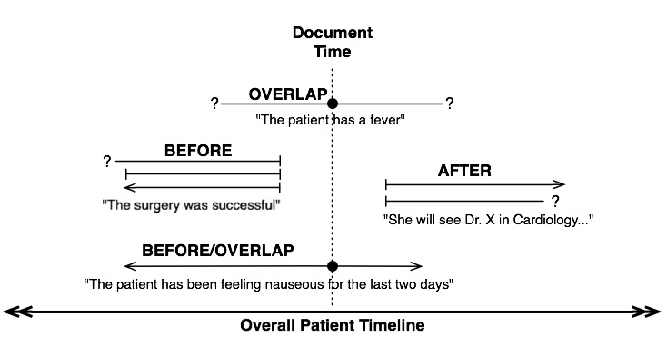
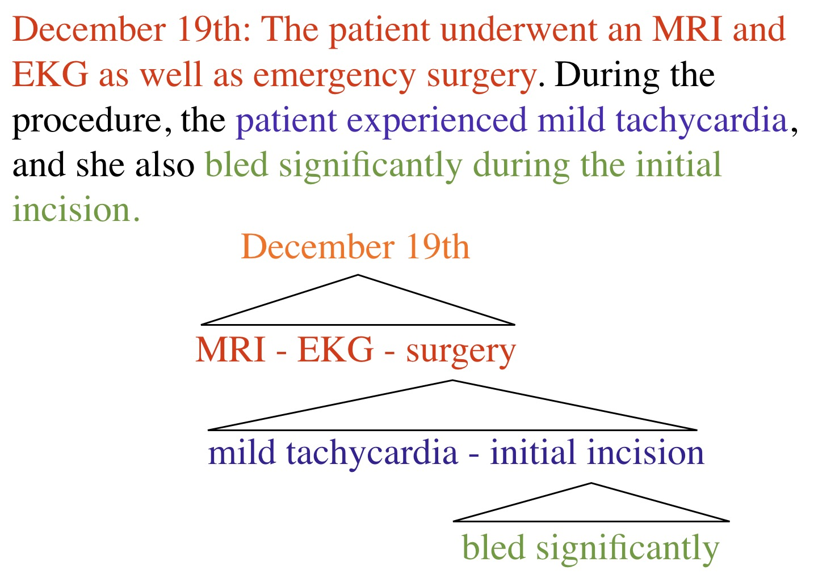
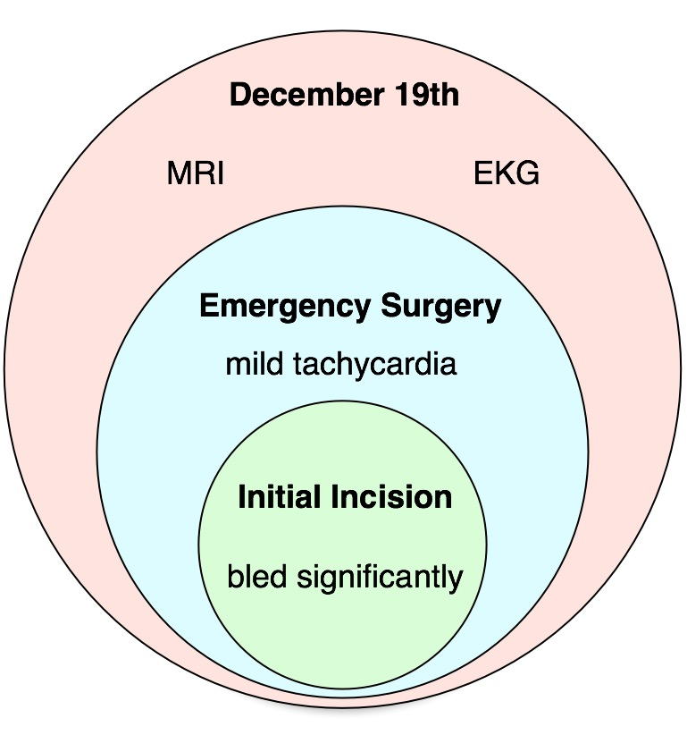
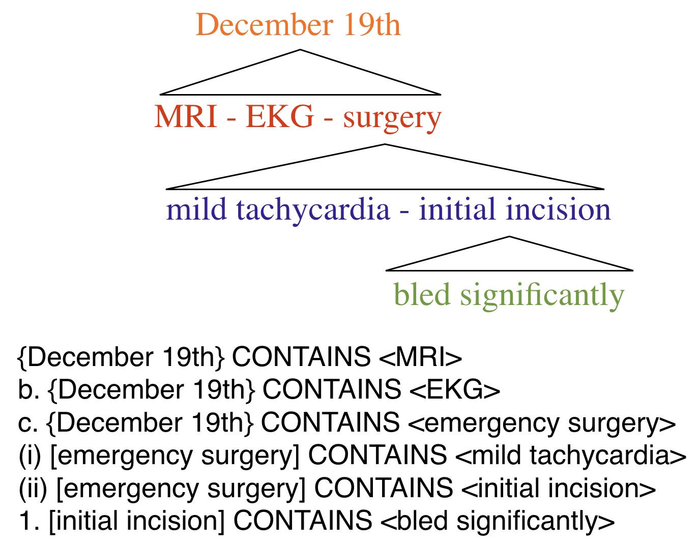
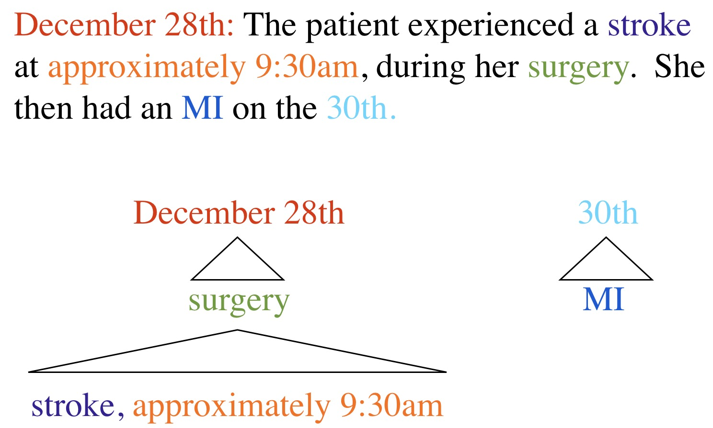
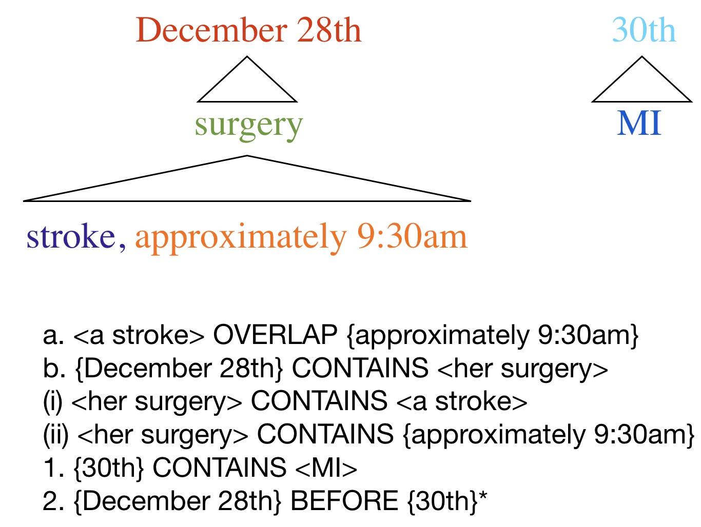

Please check out my guide to grade change and exception requests before sending one!
Good requests are always welcome, but problematic requests burn bridges, show poor integrity, and work against you
Please, don’t be that student.
Yet there are some kinds of meaning that aren’t lexical
… but we still want to train computers to learn them
We can’t just say “Hey, Neural network: Learn how events work”
We need to give the computer the kind of data it is supposed to generate
This involves annotation
Today, we’ll look at a case study!


| ### Annotation needs to find things that are important. |
| - Different people think different things are important. |

“Federal Authorities say a Malaysian Businessman nicknamed Fat Leonard obtained U.S. military secrets in 2009. He lined up hookers, Lady Gaga tickets and other bribes for a commander.”
“Federal Authorities say
a Malaysian Businessman nicknamedFat Leonard obtained U.S. military secrets in 2009.He lined up hookers, Lady Gaga tickets and other bribes for a commander.”
This is called ‘Anaphora’ or ‘Coreference’
“Federal Authorities say a Malaysian Businessman nicknamed Fat Leonard
obtained U.S. military secrets in 2009. He lined up hookers, Lady Gaga tickets and other bribes for a commander.”
“Federal Authorities say a Malaysian Businessman nicknamed Fat Leonard
obtained U.S. military secrets in2009 . He lined up hookers, Lady Gaga tickets and other bribes for a commander.”
This is a temporal relation
“Federal Authorities say a Malaysian Businessman nicknamed Fat Leonard
obtained U.S. military secrets in 2009. Helined up hookers, Lady Gaga tickets and other bribes for a commander.”
This is a causal relation
“
Federal Authorities say a Malaysian Businessman nicknamed Fat Leonardobtained U.S. military secrets in 2009. Helined up hookers, Lady Gaga tickets and other bribes for a commander.”
This is an Epistemic relation
“Thanks.”
[droning intensifies]
“She was admitted for an appendectomy on January 12th. She had a rash after surgery, which we successfully treated with hydrocortisone on the 18th.”
“Which treatments most often result in no cancer within six months?”
“How many patients report a change in pain level after hysterectomy for endometriosis?”
“What disorders are most likely to occur within six months of starting Adderall?”
“Are there any new symptoms or disorders which occur more often than chance following administration of the COVID-19 vaccine?”
“Was there a spike in cancer cases in 2012 following Fukushima?”
“Find all cases where the patient took Vioxx for at least a year before they had a heart attack or stroke”
“In what percentage of cases does a patient report facial numbness after this plastic surgery technique?”
1: EVENTs and Entities
2: Temporal Expressions
3: Temporal Relations
4: Causal Relations
5: Reporting Relations
6: Coreference relations
Humans can apply it consistently and uniformly
Each markable item must have only one possible “answer”
Each markable must have at least one answer which fits
“Her appendicitis caused acute peritonitis”

“The bombing followed an attack in Basra”
“
She wasadmitted for anappendectomy on January 12th.She had arash aftersurgery , whichwe successfullytreated withhydrocortisone on the 18th.”

“The white supremacists stole Sudafed to fund their terrorist dinner parties”
“Sudafed resolved her cold on March 15th.”
“Tainted Sudafed has caused 2 deaths so far.”
DocTimeRel - When did it happen relative to the writing?
Type - Is it evidential? Aspectual?
Polarity - Positive or Negative?
Modality - Did it actually happen?
Aspect - Was it constant or intermittent?
Representation - Was it explicitly mentioned, or implied?

ACTUAL - It happened
UNCERTAIN/HEDGED - It maybe happened
HYPOTHETICAL - It could happen
GENERIC - It’s a thing that happens, but this isn’t a specific one
“She has pneumonia”
“She may develop pneumonia”
“Pneumonia is particularly deadly to the elderly”
“Her chest sounds are not inconsistent with pneumonia”
“The X-Ray is strongly suspicious for pneumonia, but not conclusive”
“The general stated that bombing the compound overnight “was still an option””
“With the advent of newer technologies, bombings are deadlier than ever.”
“He came home after allegedly poaching Cassowaries.”
“We will conduct a bombing at 0300”
“We may conduct a bombing at 0300”
“
She wasadmitted for anappendectomy onJanuary 12th .She had arash aftersurgery , whichwe successfullytreated withhydrocortisone onthe 18th .”
DATE (January 13th, Last Week, Lately)
TIME (5 minutes from now, 6:45)
DURATION (For 20 minutes, Since last week)
QUANTIFIER (Twice, Eight times)
SET (Twice a week, BID)
PREPOSTEXP (“Preoperative”, “Post-partum”)
“The bombing occurred
“
“She’s been having trouble sleeping
“She should expect soreness
“
“
She wasadmitted for anappendectomy onJanuary 12th .She had arash aftersurgery , whichwe successfullytreated withhydrocortisone onthe 18th .”
“The patient developed a mild post-surgical rash, which was treated with hydrocortisone at the follow-up, many years after Napoleon’s exile to Elba.”


Don’t mark the relations between EVENTs.
Instead, put EVENTs in temporal buckets and relate the buckets
December 19th: The patient underwent an MRI and EKG as well as emergency surgery. During the procedure, the patient experienced mild tachycardia, and she also bled significantly during the initial incision.



December 28th: The patient experienced a stroke at approximately 9:30am, during her surgery. She then had an MI on the 30th.


“
She wasadmitted for anappendectomy onJanuary 12th .She had arash aftersurgery , whichwe successfullytreated withhydrocortisone onthe 18th .”
-
“She pulled the trigger, firing the gun and killing the T-Rex.”
“The general ordered the pilot to drop a bomb on the village”
“She pours sugar into her Mountain Dew. She’s now diabetic.”
“The rockfall destroyed the overfull dam”
“The over-filling destroyed the rockfall-damaged dam”
“She pulled the trigger, firing the gun and killing the T-Rex.”
“The general ordered the pilot to drop a bomb on the village”
“She pours sugar into her Mountain Dew. She’s now diabetic.”
“The rockfall destroyed the overfull dam”
“The over-filling destroyed the rockfall-damaged dam”
“Her shot killed the T-Rex”
“She fired the gun, killing the T-Rex.”
“She pulled the trigger, firing the gun and killing the T-Rex.”
“She pulled the trigger, disengaging the safeties and releasing the hammer which collided with the firing pin, hitting the primer and firing the bullet whose strike killed the T-Rex.”
“
Federal Authorities say a Malaysian Businessman nicknamed Fat Leonardobtained U.S. military secrets in 2009. Helined up hookers, Lady Gaga tickets and other bribes for a commander.”

“
She wasadmitted for anappendectomy onJanuary 12th .She had arash aftersurgery , whichwe successfullytreated withhydrocortisone onthe 18th .”
“The Bay Harbor Butcher is off the streets, as Dexter Morgan, the alleged killer, was arrested by police over the weekend”
“Bill Clinton was the President of the United States in 1999. Now Joe Biden is POTUS.”
“What happened?”
“When?”
“What could have happened, but didn’t?”
“What caused it?”
“Says who!”
Easy!
(It was not easy)
Events are complicated
Time is complicated
Temporal Relations? Complicated.
Causality is crazy complicated.
Coreference? You guessed it. Complicated.